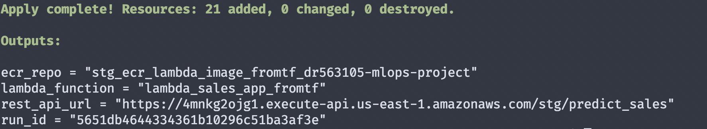
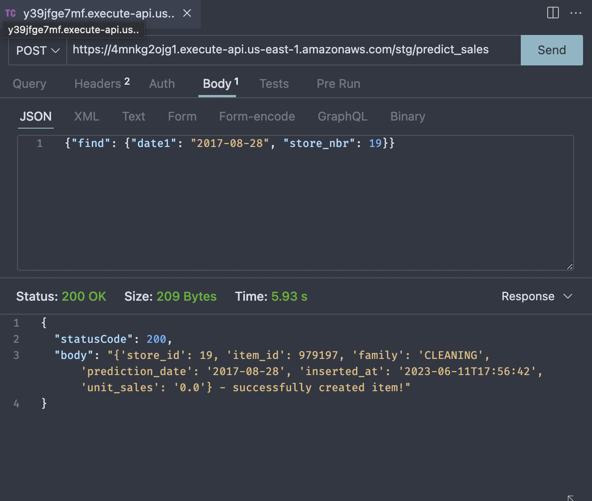
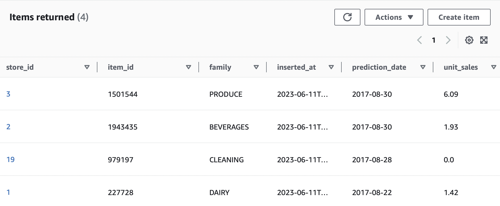

Introduction
In part 2 we saw how to migrate to AWS cloud. In bigger projects where so many resources are present, it is near impossible to remember and manage them using the console. Terraform provides that solution. It allows to track resources just like code. We saw about the use of Terraform in my introduction post on Terraform.
In this part, we will take the data pipeline from part 2 and use Terraform to manage the infrastructure.
Designing the Pipeline

Terraform state file(.tfstate)
Terraform stores its states in a file called .tfstate. This file can be local or in cloud. We will use a S3 bucket for it. Since this is a file that has to be placed in this bucket, the bucket has to be manually created by us. Use the console and create a S3 bucket with a unique name such as s3-for-terraform-state-mlops.
terraform {
backend "s3" {
bucket = "s3-for-terraform-state-mlops"
key = "mlops-grocery-sales_stg.tfstate2"
region = "us-east-1"
encrypt = true
}
}- 1
- S3 TF state bucket name
- 2
- TF state file name is given a key
Artifact store bucket
This bucket will be present from the ML model training stage. In our case, mlops-project-sales-forecast-bucket is that bucket. We will supply this bucket name to our container image.
Modules
In Terraform, each resource is called a module. In our case there are four modules.
(1). ECR
(2). Lambda Function
(3). DynamoDB
(4). API Gateway
For our operation the data has to flow from module 1 to 4. Terraform has a depends_on meta-argument that allows the sequential flow ensuring correct flow order. This way we can write our modules in any order we want and Terraform will take care of the order of execution unlike Ansible.
Just like many script language, Terraform starts with a main.tf(entrypoint) and whatever variables used in this file has to be defined in variables.tf. These files are present in the root folder usually.
In the main.tf file, each module is defined. The modules are placed in separate directories. This way it is easier to manage several resources easily. The path to the module directory is given within each module in main.tf and the variable used by each module is also passed as arguments. For example, if accound_id is needed by the module, we can pass that value to the module.
Module block 1 - ECR
infrastructure/modules/ecr/main.tf
module "ecr_image" {
source = "./modules/ecr"
ecr_repo_name = "${var.ecr_repo_name}_${var.project_id}"
account_id = local.account_id
lambda_function_local_path = var.lambda_function_local_path
docker_image_local_path = var.docker_image_local_path
}- 1
- path to the ecr module
- 2
-
path of the
lambda_function.py - 3
- path of dockerfile to create docker image
Inside the module ecr, we create a main.tf and varible.tf. Variables passed into the module and also ones newly used inside it have to be defined inside variable.tf.
Building the docker container image and uploading to ECR
Usually docker container image building is part of the CI/CD pipeline but since the lambda function requires us to have the image, we build it locally and upload using Terraform’s local-exec provisioner. However, Terraform advises caution with the use of provisioners. Read more on that here.
infrastructure/modules/ecr/main.tf
resource "null_resource" "ecr_image" {
triggers = {
"python_file" = md5(file(var.lambda_function_local_path))
"docker_file" = md5(file(var.docker_image_local_path))
}
provisioner "local-exec" {
command = <<EOF
aws ecr get-login-password --region ${var.ecr_region} | docker login --username AWS --password-stdin ${var.account_id}.dkr.ecr.${var.ecr_region}.amazonaws.com
cd ${path.module}/../..
docker build -t ${aws_ecr_repository.repo.repository_url}:${var.ecr_image_tag} .
docker push ${aws_ecr_repository.repo.repository_url}:${var.ecr_image_tag}
EOF
}
}- 1
-
A
null_resourceblock is a feature of Terraform’s. With a help oftriggersmeta-argument, we can observe any change to lambda_function or dockerfile. - 2
-
When there is a change, a trigger condition is active and
local-execis executed. The image is built and uploaded.
Module block 2 - Lambda Function
Our ECR image is ready to be used as source for Lambda Function. With a depends_on meta-argument, this condition is ensured.
Our lambda_function inside the container image requires three environment variables: artifact_bucket, run_id, dbtable_name. These variables are passed into the lamda function module as arguments.
infrastructure/modules/lambda/main.tf
resource "aws_lambda_function" "lambda_function" {
function_name = var.lambda_function_name
description = "Sales Forecast lambda function from ECR image from TF"
image_uri = var.image_uri
package_type = "Image"
role = aws_iam_role.lambda_exec.arn
tracing_config {
mode = "Active"
}
memory_size = 1024
timeout = 30
environment {
variables = {
S3_BUCKET_NAME = var.artifact_bucket
RUN_ID = var.mlflow_run_id
DBTABLE_NAME = var.dbtable_name
}
}
}
resource "aws_cloudwatch_log_group" "lambda_log_group" {
name = "/aws/lambda/${aws_lambda_function.lambda_function.function_name}"
retention_in_days = 30
}- 1
- IAM Role attached to the Lambda function.
- 2
- Environment variables for the lambda function to predict sales.
- 3
- Setting Cloudwatch logs retention period.
IAM Roles and Polices
The AWS Lambda function is the business layer of our app. It plays a crucial role in predicting the sales output. Therefore it needs access to retrieve the trained model from the artifact_bucket and store the predicted results in the DynamoDB table. These operations are only possible if we give AWS Lambda function permission.
An IAM role lambda_exec is created.
IAM Role->lambda_exec
resource "aws_iam_role" "lambda_exec" {
name = "iam_${var.lambda_function_name}"
assume_role_policy = jsonencode({
"Version": "2012-10-17",
"Statement": [{
"Action": "sts:AssumeRole",
"Principal": {
"Service": "lambda.amazonaws.com"
},
"Effect": "Allow",
"Sid":""
}]
})
}- 1
- Role just for lambda function service
To this roles several policies are added. We need three policies for - Basic lambda execution, Access S3 artifact bucket, Put items into DynamoDB table. These three policies are defined and attached using aws_iam_role_policy_attachment resource block.
Module block 3 - Dynamodb
Similar to the previous two blocks, dynamodb module is called with necessary arguments.
resource "aws_dynamodb_table" "sales_preds_table_fromtf" {
name = var.dynamodb_tablename
billing_mode = "PAY_PER_REQUEST"
table_class = "STANDARD_INFREQUENT_ACCESS"
hash_key = var.dynamodb_hashkey
range_key = var.dynamodb_rangekey
attribute {
name = var.dynamodb_hash_key
type = "N"
}
attribute {
name = var.dynamodb_range_key
type = "N"
}
}- 1
- Billing mode is set as “On-Demand”
- 2
- Hash key is the Partition Key
- 3
- Range Key is the Sort Key
Module block 4 - API Gateway
API Gateway management with Terraform follows all the steps we need manually in the console. The steps are -
(1). Create rest api with resource aws_api_gateway_rest_api
(2). Create gateway resource with aws_api_gateway_resource and give the endpoint path as predict_sales.
(3). Define the gateway method with rest_api_post_method as POST.
(4). Setup POST method’s reponse upon succesfull execution with a code 200.
(5). Integrate and deploy the gateway with aws_api_gateway_integration and aws_api_gateway_deployment respectively.
(6). Stage the deployment with rest_api_stage and get the invoke_url. For this we can use the output block.
output "rest_api_url" {
value = "${aws_api_gateway_deployment.sales_pred_deployment.invoke_url}${aws_api_gateway_stage.rest_api_stage.stage_name}${aws_api_gateway_resource.rest_api_predict_resource.path}"
}(7). Define IAM policy for rest api with aws_api_gateway_rest_api_policy and give access to API gateway to invoke the lambda function with aws_lambda_permission.
Variables
In Terraform we can pass variable values in many ways. One of those ways is through .tfvars file. This file is exclusively for variables. These variable files are extremely helpful when we need different variable names for development, staging and production. The syntax for supplying the file is like so: -var-file vars/stg.tfvars.
Deployment
We can validate our terraform configurations with the command terraform validate. Annoyingly the error messages are vague and generalised.
Initialise backend
terraform init initialises the Terraform backend, checks where the state file has to be saved and if it is remote, availability of the bucket is validated, installs all the provider plugins.
Plan and Apply Changes
With terraform plan -var-file vars/stg.tfvars we can see what new resources be created/changed/destroyed. This gives as a plan and confirmation of our setup.
terraform apply -var-file vars/stg.tfvars will apply our configurations. At the end the rest_api_url will be displayed. 
Take that, put it in an api client and supplying our sample JSON input {"find": {"date1": "2017-08-28", "store_nbr": 19}}. You should see the status code as 200 and the body containing the predictions with a confirmation saying the item has been successfully created.

We can confirm it by going to Dynamodb console and checking the items in the table

Destroying resources
Upon completion of the task it is always good practice to destroy the resources to avoid incurring unnecessary costs.
Use terraform destroy -var-file vars/stg.tfvars to destroy the resources and leave it as we started. Remember in real production environment, destroy command should never be used. Instead delete the resources that are unnecesary and run apply command again.
Conclusion
We successfully setup Terraform for our application. With single line commands we can manage resources at ease.